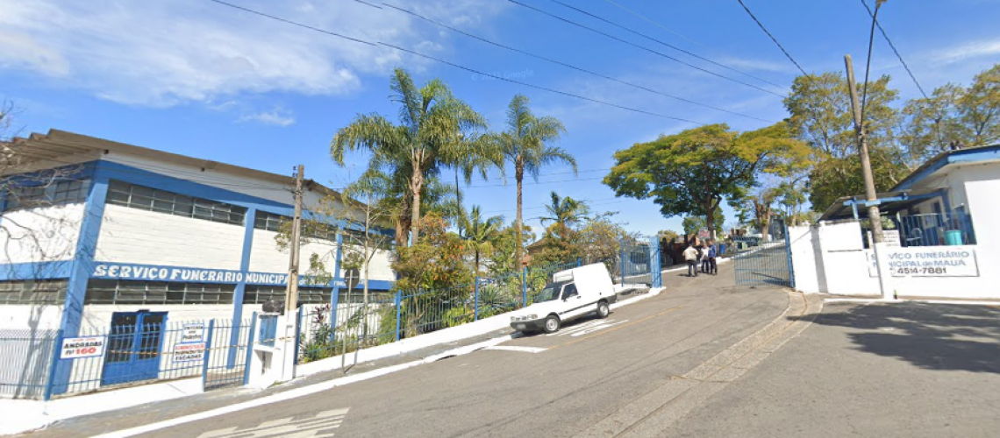

Principais atividades
Conheça as principais etapas do atendimento e da logística realizada pelo Cemitério Municipal Santa Lídia.
Registro do Óbito
O processo inicia com o registro formal do óbito e a conferência da documentação necessária. As informações são cadastradas para garantir a correta identificação e acompanhamento do atendimento.
Liberação e Documentação
Após a confirmação dos documentos exigidos, ocorre a autorização para prosseguimento do atendimento. Essa etapa assegura que todos os requisitos legais estejam devidamente atendidos.

Recolhimento e Transporte
O transporte é realizado de forma organizada e segura, registrando horários de saída e chegada para garantir o controle logístico e a rastreabilidade de todo o processo.

Recepção e Sepultamento
Ao chegar ao cemitério, os dados são conferidos e o procedimento é direcionado ao local adequado. A etapa final contempla o sepultamento, respeitando os protocolos e normas vigentes.
Controle e Monitoramento
Durante todo o fluxo operacional são registrados horários, movimentações, documentos e informações relacionadas ao atendimento. Esses registros permitem maior organização, rastreabilidade dos procedimentos e apoio à gestão administrativa do cemitério.